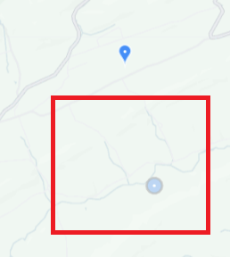
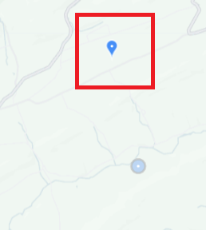

Due to limitations of the iNaturalist API, bounding box searches return observations which have public coordinates inside the box. The pin is on the private coordinates, which may be inside the box, or may be outside the box.
In the example, the pin is on the private location of an observation and the faded circle is the public location of that same observation. A search around the faded circle will return the pin outside the box.

This is the converse of the previous question. Since bounding box searches can only return observations which have public coordinates inside the box, if your bounding box encloses the private coordinates, but not the public coordinates, the observation will not be returned. Expand your search area to include the public coordinates and the pin will appear at the private location.
In the example, the pin is on the private location of an observation and the faded circle is the public location of that same observation. A search around the pin (but not the circle) will not return this observation.

Due to limitations of the iNaturalist API, private observations can only be returned if there is no place restriction on the search (a global search), or if the place restriction is set by place_id rather than bounding box. Remove the bounding box or search by place_id to find your private observations.
iNaturalist does not currently provide a way to view this information.
Some iNaturalist pages don't support some search parameters (for example, the Export page doesn't support the obscuration parameter). Consider opening a discussion on the iNaturalist Forum for workarounds, or if there is no alternative, you can make a feature request to support the parameter.
See this forum thread.